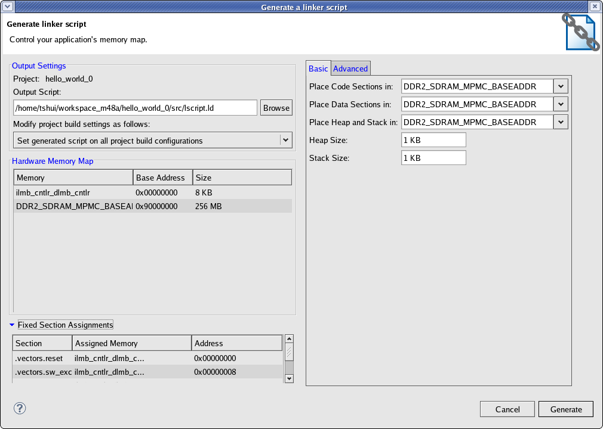

Creating a Linker Script
Generating a Linker Script for an Application
To generate a linker script for an application, do the following:
- Select the application project in the Project Navigator or C/C++ Projects view, and right-click Generate Linker Script or click
Xilinx Tools > Generate Linker Script.
- The left side of the dialog box is read-only except for Output Script name and project build settings in Modify project build settings as follows.
- Configure the following sections of the Linker Script Generator dialog box Basic tab:
- Code Sections: Use this area of the dialog box to map code sections onto memory.
- Data Sections: Use this area of the dialog box to map data sections onto memory.
- Heap and Stack: Use this area to map the heap and stack onto memory.
- Heap Size: Use this box set the heap size.
- Stack Size: Use this box set the stack size.

- If you require more control over the definition of memory sections and assignments to them, use the Linker Script Generator dialog box Advanced tab:
- Code Section Assignments: Use this area of the dialog box to map code sections onto memory.
- Data Sections Assignments: Use this area of the dialog box to map data sections onto memory.
- Heap and Stack Section Assignments: Use this area to map the heap and stack onto memory and define their sizes.

- Click OK. If there are errors, they must be corrected before you can build your application with the new linker script.
Note: If the linker script already exists, a message window appears, asking if you want to overwrite
the file. Click OK to overwrite the file or Cancel to cancel the overwrite.
SDK automatically adds the linker script to the linker settings for a
managed make project based on the options selected in Modify project build settings as follows.
Adding the Linker Script Manually
If you want to manually add the linker script for a
managed make flow, do the following:
- Right-click your managed make project and select C/C++ Build Settings.
- Click the linker corresponding to your target processor, for example MicroBlaze gcc linker.
- Select Linker Script
to add the linker script.
For standard make projects, add the linker script manually to your makefile linker
options.

Linker scripts

Building projects
Copyright © 1995-2013 Xilinx, Inc. All rights reserved.